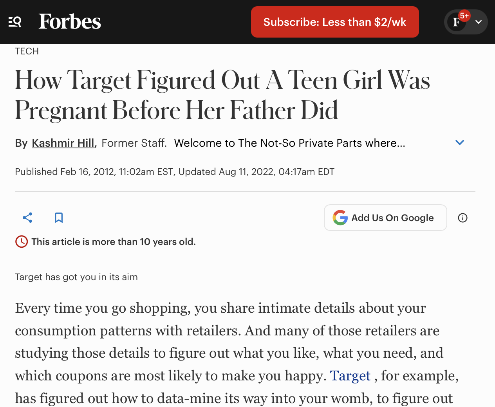
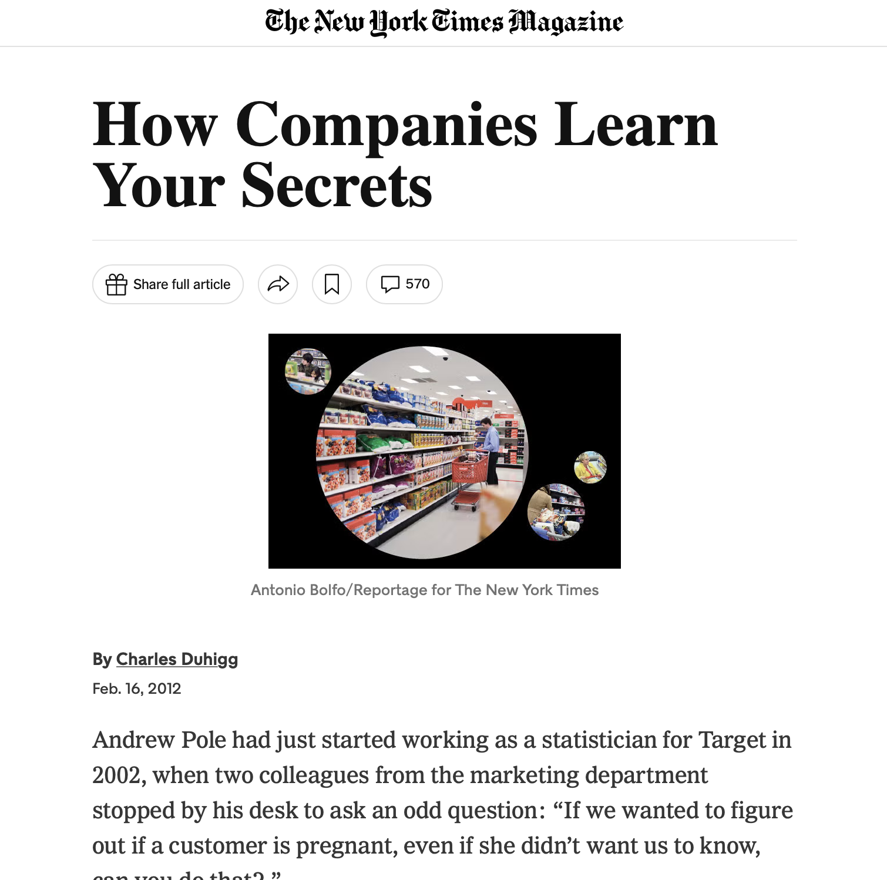

The Model Isn’t Always the Answer
AI, statistics, and the judgment behind good decisions
What is generative AI?
Generative AI learns patterns from data and uses them to produce new content.
- Text models generate text.
- Image models generate images.
- Audio models generate sound.
Plausible output is not necessarily true output.
More complex doesn’t always mean better
The goal is to perform well on data the model has never seen.
Training loss keeps improving. Test loss turns back up.
Garbage in, garbage out
A model can only work with the information and assumptions it receives.
- Biased or incomplete data can create biased results.
- Poorly chosen outcomes can answer the wrong question.
- A model can perform well on paper and fail in practice.
Before asking whether the model works, ask what it was built to do.
When the model affects real people
Cathy O’Neil — Weapons of Math Destruction
- NYC teacher evaluations used value-added models to estimate teachers’ contributions to student test scores.
- Hiring algorithms can reproduce patterns in historical hiring data.
- High-stakes scores can be difficult for affected people to challenge.
Stat 121 refresh for ethical use: Scale, Opacity, Damage
Accurate doesn’t always mean ethical
Target’s pregnancy-prediction example
A retailer used purchasing patterns to infer that some customers might be pregnant.
- Potential benefit: more relevant marketing.
- Potential harm: sensitive inferences and unexpected exposure.
Just because we can predict something doesn’t mean we should use it.


Sources: Forbes, The New York Times
The model is only part of the advantage
Data + domain knowledge + validation
My experience:
What happens when everyone has the model?
When everyone can access similar tools, access alone stops being a lasting advantage.
The advantage shifts toward:
- Better data
- Better questions
- Better evaluation
- Better implementation
- Better judgment
AI has limitations. People have responsibilities.
Before trusting a model, ask:
- What question is it actually answering?
- What data and assumptions shaped it?
- How was it evaluated on new cases?
- Who could be harmed if it is wrong?
- Who is responsible for the final decision?
“Do Your Job”
A model can assist with the task. It cannot take responsibility for the outcome.
The model always isn’t the answer
Good decisions require more than good predictions.
They require:
- Sound data
- Appropriate models
- Honest evaluation
- Ethical judgment
- Human accountability